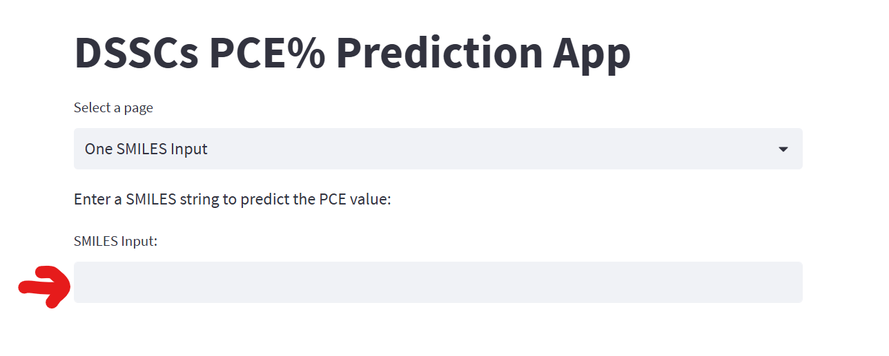
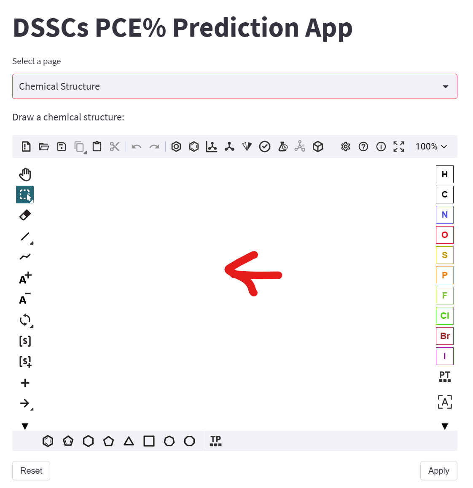
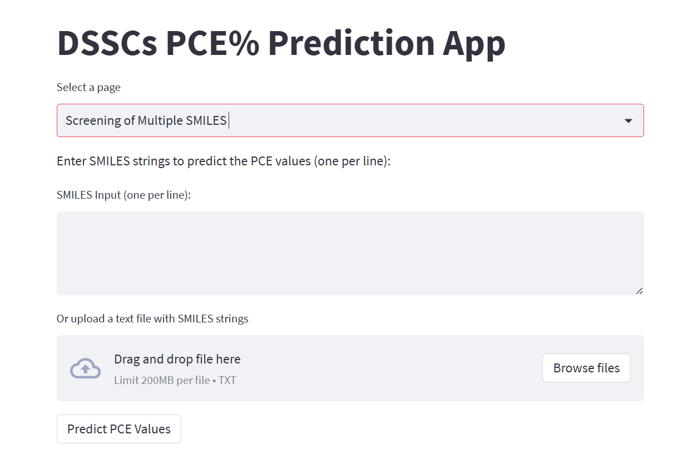

Fingerprint Machine Learning for Solar Cell Optimization
Published in Nature Scientific Reports (2024), this work introduces a high-accuracy neural modeling framework that correlates Daylight molecular topological fingerprints with solar cell efficiency. The model successfully guided the rational modification of reference dyes, demonstrating a predicted ~50% PCE boost (from 7.70% for MK2 to 11.49% for designed derivative MK2-DM1), subsequently validated via quantum DFT density difference and charge transfer analysis.
Computational Specs
-
Core Algorithm: Multilayer Perceptron Regressor (MLPRegressor) with adaptive Adam optimizer
-
Descriptor Scheme: Daylight 2048-bit topological molecular fingerprints
-
Primary Target: Power Conversion Efficiency (PCE %) under standard AM 1.5G 100 mW/cm² illumination
-
Experimental Validation: Correlated against benchmark sensitizers and TD-DFT electronic excitation simulations
Three Flexible Input Options in the Live App
Researchers can supply candidate molecules using textual strings, interactive molecular sketches, or batch uploads.

Direct SMILES String
Paste the canonical SMILES string of your candidate imidazole dye directly into the text field for an instant, real-time PCE prediction.

Chemical Drawing Canvas
Use the built-in interactive molecular sketcher to modify functional donor/acceptor substituents. The app converts the drawing into SMILES automatically.

Batch Library Screening
Upload multi-compound .txt or .csv chemical libraries. The system computes predictions in parallel and exports ranked sorting tables.